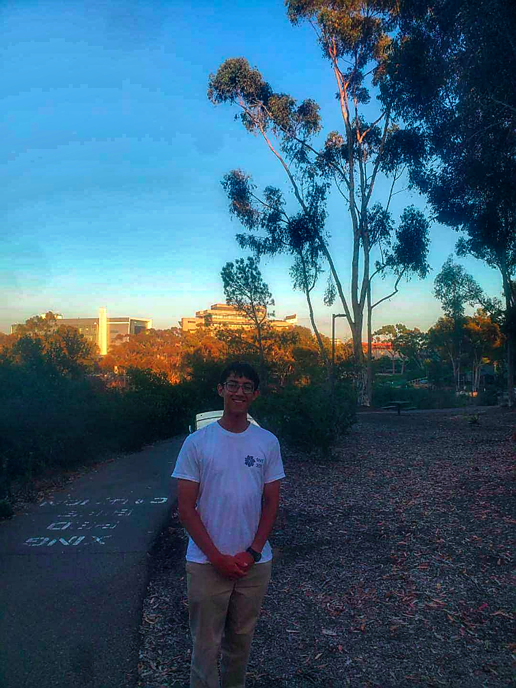

About Me

My name is Stefan Gadient, and I am a 2nd year undergraduate student majoring in computer science and applied mathematics. I am local to San Diego, and I am looking forward to CSE110.
Table of Contents
- Background in Computer Science
- Background in Mathematics
- Time at UCSD
- Future Goals
- Hobbies
- Miscellaneous
Background in Computer Science
I came into UCSD with very little knowledge of programming. After getting involved in cybersecurity competitions like CyberPatriot and NCL, I began scripting in Bash and PowerShell, later learning Python and Java.
Background in Mathematics
I have been heavily invested in mathematics from a young age, competing in AMC, ARML, SDMO, and the UCSD High School Honors Contest.
Time at UCSD
During my freshman year, I competed in NCL and the Putnam exam while focusing on systems programming and software development.
Future Goals
- Research (EEG data at ACTRI)
- Make a Chess AI
- SWE Internship
- ML Internship
- BS/MS Program @ UCSD
Hobbies
In my free time, I enjoy reading, gaming, playing piano, and chess.

Miscellaneous
Python Autoclicker
import pyautogui, time
pyautogui.FAILSAFE = True
time.sleep(5)
while True:
pyautogui.click(1280, 711)
time.sleep(1.5)
Favorite Poem
Two roads diverged in a yellow wood,
And sorry I could not travel both
And be one traveler, long I stood
And looked down one as far as I could
To where it bent in the undergrowth;Then took the other, as just as fair,
And having perhaps the better claim,
Because it was grassy and wanted wear;
Though as for that the passing there
Had worn them really about the same,And both that morning equally lay
In leaves no step had trodden black.
Oh, I kept the first for another day!
Yet knowing how way leads on to way,
I doubted if I should ever come back.I shall be telling this with a sigh
Somewhere ages and ages hence:
Two roads diverged in a wood, and I—
I took the one less traveled by,
And that has made all the difference.